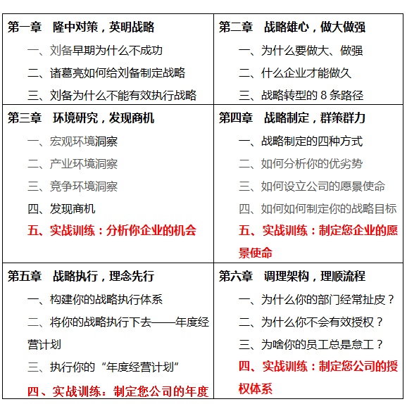

| 胡圣浩博士 课程中心相关电子文档三 |
您好，非常高兴地邀请您参加我公司举办的《从战略到执行：1+6模式》的实战课程学习。该课程将系统解决您公司发展中的困惑，手把手式的教您全面提升管理技能，免费的诊断方式为您透视企业问题，全面培养您团队的战斗力，常年的顾问服务为您保驾护航、警钟长鸣。
一、 【课程特点】
【课程特点】

二、 【课程背景】
为什么刘备在遇到诸葛亮之前总是打败战，过着颠沛流离、寄人篱下的生活？有了诸葛亮就能转败为胜、成就三足鼎立？这是诸葛亮的功劳，还是隆中对策的英明战略？
为什么拥有良好创意的五谷道场“败走麦城”，失败的原因是什么？
为什么大量的企业拥有良好的战略，却不能获得成功？
为什么公司请了大量的能人、职业经理高手，却仍然提高不了战略执行力呢？
公司请了大量的培训公司来进行执行力的培训，为何课程上听了很激动，课后却“一动也不动”呢？仍然是不能有效解决问题呢？
为什么企业老板给员工加了工资，仍然留不住人才呢？
为什么很多企业老板说公司的制度很多了，但咨询顾问入场进行诊断后，却发现公司存在大量的制度漏洞？这些制度漏洞如何修补？
……
三、 【课程收益】
针对中国企业当前环境下的特殊需求，胡老师拟通过从战略到执行上的系统讲解，条分缕析的方式分析当前企业战略执行中存在的种种不科学、不合理的现象，通过“1+6”模式全面系统解决企业发展方面的难题。
1、 制定公司战略：在当前经济转型的背景下，分析当前的中国宏观环境和企业面临的微观环境，促使企业家不仅能够居高临下的透视问题，而且学会分析工具；并且能亲自制定公司的发展战略；
2、 掌握6大执行工具：掌握战略执行的6大系统工具，提供从执行意识、年度经营计划到组织调整、薪酬设计、绩效考核、流程优化等方面的操作策略；
3、 提升组织智商：通过全面系统的战略执行课程的学习，整体提升公司团队对社会环境、客户、竞争者及自身的认识高度；
4、 打造团队执行力：通过团队的合力培训，全面提升团队领导力、执行力和进取精神；分享同行经验，凝聚行业知识。
四、 【课程对象】
本课程适用于企业家团队，由公司董事长或总经理带队，带3名高管人员（含一名赠送名额）参加《从战略到执行：1+6模式》课程学习。
五、 【课程时间及地点】
共3天2夜
六、 【讲师简介】
胡圣浩，集团战略与集团管控资深实战管理专家，清华大学、中山大学、电子科技大学总裁班特聘教授，经济学博士，多家杂志特约撰稿人、特约研究员，中国总裁网、中国讲师网金牌讲师，近20年工作经验，曾在上海华彩咨询集团、用友集团等单位工作，任职咨询总监、高级合伙人和总经理。
发表著作：《从战略到执行》、《管理学原理》、《组织行为学原理与实务》、《市场营销》等专著5部，30余篇论文。
培训课程：主讲《从战略到执行――战略落地系统解决之道》、《战略转型与商业模式创新》、《集团战略规划》、《集团管控与组织能力打造》、《营销金手指》、《如何提升组织绩效》、《战略地图与平衡计分卡》等。
七、 【培训风格】
擅长以案例分析入手，循循善诱，旁征博引，深入浅出，诙谐幽默，能将深奥的战略管理课程讲解得通俗易懂且趣味横生，于谈笑间增长学员知识，于互动间增强学员能力；
擅长互动式培训、角色扮演、游戏活动等培训方式，能够深入浅出讲述企业本质，改善企业绩效，成就基业长青。
八、 【课程目录】
| 逻辑严谨 | 抽丝剥笋 |
|---|---|
| 语言生动 | 深入浅出 |
| 注重体验 | 寓教于乐 |
| 结果导向 | 支持实操 |
| 亲力亲为亲身运用独创的管理方法,结合学员的实际情况,讲授自己做过的案例 | 启发学员多角度思考，促其开悟，极大地提升学员的工作成效和业绩(来自客户) |